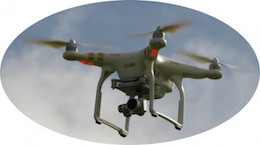
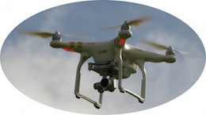
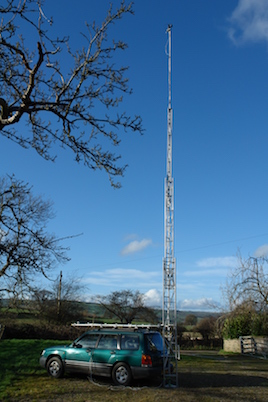

Ads-Up Elevated Photography
Providing quality imaging, video and mapping solutions to Wales and the West Midlands
RPAS Photography

Providing quality imaging, video and mapping solutions to Wales and the West Midlands
RPAS Photography

{kind=link}
We are licenced and fully insured to undertake still and video assignments using small, battery powered RPAS (Remotely Piloted Aircraft System) quadcopters fitted with an integral 4K video camera with the ability to take high quality stills in both RAW and JPEG.
In June 2014 we completed our Remotely Piloted Aircraft System (RPAS) course, exam and flight assessment and received our 'Permissions' (see Documentation) to fly RPA's for commercial gain from the Civil Aviation Authority. We are members of ARPAS-UK, the leading association for CAA approved RPAS operators. We are also members of the Drone Safe Register (DSR).
Using experience already gained in working with estate agents and developers, we are able to offer the option of flexible video and still photography using the RPA, in addition to stable, high quality images from the masthead system.
Masthead System

{kind=link}
In 2007 we developed a simple system for producing quality images taken with a remote controlled camera mounted on a 50' telescopic mast. This system is often used in situations where the RPAS is not viable due to adverse weather conditions, or where deployment would contravene CAA regulations.
This low level aerial photography, using the latest software & equipment, is an ideal and cost effective solution for estate agents, property developers, health & safety surveyors, and building inspectors who need images of sites and buildings which would otherwise require the use of expensive scaffolding or aircraft. The masts are generally mounted on 4x4 vehicles, making access to off-road sites much easier; they can also be used 'free-standing', using guy wires for stability, when vehicle access is not an option.
The system can be erected, operated and dismantled by one person in little over an hour, with the images supplied on CD at the end of the process. Among our various clients, we count festival organisers, local newspapers and private individuals, all of whom require a different 'viewpoint' to that provided by ground based equipment.
With our high magnification capability, we are able to supply detailed, close-up assessment shots of roofs, gutters and chimneys in hard to reach places without the inconvenience and expense of erecting scaffolding.
Projection Advertising

We offer high power projections for product launches, promotions & events, - inside or out - from single colour logos of any size to full colour photographs, video projection and 3D mapping solutions.
Our projectors are used to promote campaigns for local councils, fire authorities, police, nightclubs & bars. We have projected logos for extreme sports events in the UK & Europe, in addition to providing bespoke video projection designed by Harry Houlker for the recent anniversary event at the Andrew Logan Museum in Powys.
A note on pricing:
As costs for both projection and elevated photography will vary according to the project requirements and location, please feel free to contact us for a quotation.
As a rough guide, a photography commission requiring multiple shots from the same location, delivered on a CD on site, would cost approximately £150 + VAT + mileage. Photo editing and retouching where required is charged on a time spent basis.